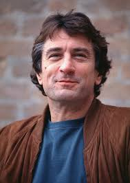
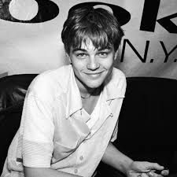
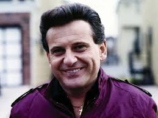
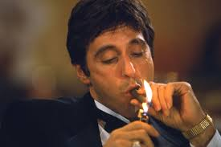

Robert De Niro

Robert De Niro este unul dintre cei mai mari colaboratori ai lui Scorsese. Aceștia au lucrat împreună la filme legendare care au redefinit cinematografia.
- Taxi Driver (1976) - Un studiu psihologic al unui veteran alienat.
- Raging Bull (1980) - Biografia lui Jake LaMotta, câștigător al unui Oscar pentru De Niro.
- Goodfellas (1990) - O capodoperă a filmelor de mafie.
Leonardo DiCaprio

DiCaprio a devenit muza modernă a lui Scorsese, apărând în mai multe filme remarcabile.
- Gangs of New York (2002) - O poveste epică despre răzbunare și putere.
- The Wolf of Wall Street (2013) - O comedie neagră despre excesele financiare.
- Shutter Island (2010) - Un thriller psihologic captivant.
Joe Pesci

Pesci este cunoscut pentru interpretările sale intense și memorabile în filmele lui Scorsese.
- Raging Bull (1980) - Fratele lui Jake LaMotta.
- Goodfellas (1990) - Rolul lui Tommy DeVito, câștigător al unui Oscar.
- Casino (1995) - O dramă epică despre putere și trădare.
Al Pacino

Deși au colaborat mai târziu, parteneriatul lor a fost extrem de apreciat.
- The Irishman (2019) - O poveste epică despre prietenie și trădare în lumea mafiei.